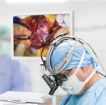
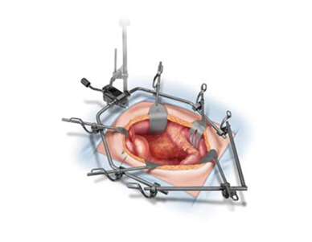
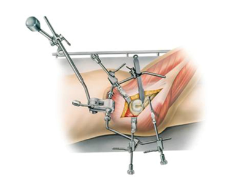
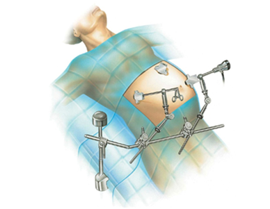
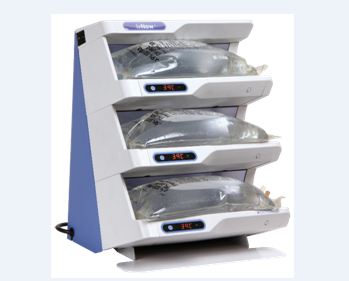

02Products
Products
Seven product lines: integrated ORs, lights and pendants, headlights, specialty retractors and fluid warming.

All-Fiber Integrated Operating Room
A complete digital integrated operating room: imaging, displays, teaching and a remote-surgery cloud platform in one system.
View details
AMI LED Surgical Light
AMI and SYSTEM TWO LED surgical lights and exam lights, plus Navigator / SUPPORT multi-function ceiling pendants.
View details
AMI LED Premium Exam Light
AMI and SYSTEM TWO LED surgical lights and exam lights, plus Navigator / SUPPORT multi-function ceiling pendants.
View details
SYSTEM TWO LED Surgical Light
AMI and SYSTEM TWO LED surgical lights and exam lights, plus Navigator / SUPPORT multi-function ceiling pendants.
View details
SUPPORT Multi-function Medical Pendant
Built by a long-established specialist manufacturer and proven over many years of clinical use, with leading safety and engineering.
View details
Navigator Multi-function Medical Pendant
Built by a long-established specialist manufacturer and proven over many years of clinical use, with leading safety and engineering.
View details
Next-generation Xenon Surgical Headlight
Xenon and LED surgical headlights, with an optional full-HD camera system that records the surgeon’s view.
View details
Portable LED Medical Headlight
Xenon and LED surgical headlights, with an optional full-HD camera system that records the surgeon’s view.
View details
Xenon Surgical Headlight with Full-HD Camera System
Xenon and LED surgical headlights, with an optional full-HD camera system that records the surgeon’s view.
View details
OMNI-TRACT General Surgery Retractor
Fork-arm frame system.
View details
OMNI-TRACT Transplant Retractor
Fork-arm frame with dual support posts for the very large exposure transplant surgery requires.
View details
OMNI-TRACT Spine Retractor
Radiolucent blades meet the intra-operative imaging needs of orthopaedic surgery.
View details
OMNI-TRACT Vascular Retractor
A dedicated vascular retractor with vascular-specific blades.
View details
OMNI-TRACT Paediatric Retractor
A dedicated paediatric retractor with paediatric-specific blades.
View details
OMNI-TRACT Urology Retractor
A dedicated urology retractor with urology-specific blades.
View details
OMNI-TRACT Hip Retractor
A dedicated hip retractor with hip-specific blades.
View details
OMNI-TRACT Knee Retractor
A dedicated knee retractor with knee-specific blades.
View details
OMNI-TRACT Laparoscopic Retractor
A dedicated laparoscopic retractor.
View details
Abdominal Surgery Retractor
General surgery: hepatobiliary, pancreatic and gastrointestinal procedures
View details
Nuanbao Rapid IV Fluid Warmer
User-friendly design that warms fluids instantly.
View details
UV24 Disinfection Unit
UV24 environmental disinfection equipment that helps keep the operating room clean.
View detailsNo matching products — try another keyword.
—Talk to us